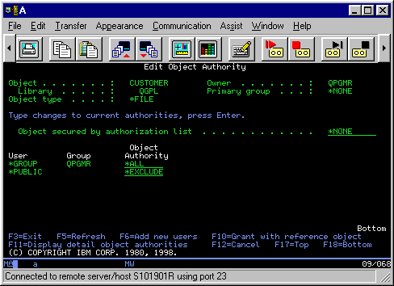

AS/400 File Access Security Using the Smart File Downloader
AS/400 File Access Security Using the Smart File Downloader
Evergreen Interactive’s AS/400 Smart File Downloader uses ordinary AS/400 object security to control user access. That is, if a user or *PUBLIC has *USE access to a physical or logical file using his/her own user profile, then he/she can access the file through the Smart File Downloader.
An authorized security administrator determines access to an AS/400 physical or logical file by editing its object authority (CL command EDTOBJAUT.) Granting a user or *PUBLIC the authority to use a file (*USE authority) is sufficient for transfer functions using the Smart File Downloader.
For example, in the following display of the AS/400 EDTOBJAUT command, *PUBLIC users have been excluded from access to the file CUSTOMER in library QGPL. Users that are part of the QPGMR group are allowed access as are users with *ALLOBJ authority.

If you have any questions please feel free to contact me at chris@EvergreenInteractive.com or at 888 821-8218.
Chris Peters
Evergreen Interactive Systems